| Property | Level | Notes |
|---|---|---|
| a_b | Species | Intercept of intrinsic growth rate - temperature function of species i. |
| b_{opt,i} | Species | Temperature at which intrinsic growth rate is highest for species i. |
| s_i | Species | Width of intrinsic growth rate - temperature function of species i. |
| a_d | Species | Intercept of death rate - temperature function of species i. |
| z_i | Species | Slope of death rate - temperature function of species i. |
| alpha_{i,j} | Interaction | Strength of interspecific effect of species j on species i. |
Response diversity and stability in the context of a pulse perturbation
Introduction
In the context of a pulse perturbation:
- will response diversity measured according to Ross et al (2023) predict community stability?
- is there an alternate measure of response diversity that better predicts community stability?
We explore these questions using a simulation model of a multispecies competition model, in which species intrinsic growth rate is a bell-shaped function of temperature, and each species can have a different temperature optimum. A pulse perturbation is created by briefly setting temperature lower than the control temperature, and then returning it to control temperature.
Methods
The multispecies model
…to be completed…
The following need to be specified for a community (in addition to the number of species):
Experimental treatments
Pulse pertubation treatment
Temperature is constant in one treatment, and is pulse perturbed in another. For simplicity, we always make the perturbed temperature lower than the control temperature.
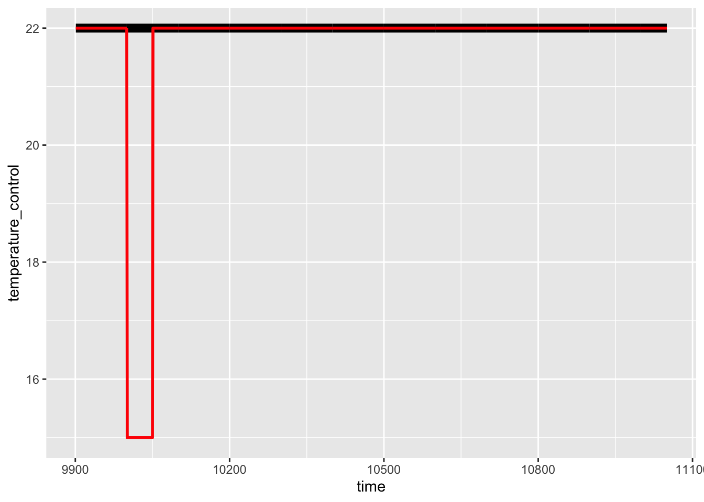
Community composition treatment
We manipulate the composition of the communities by changing the distributions from which parameter values are drawn. For example, the optimum temperature for growth for each species are drawn from a uniform distribution; we make a set of communities that vary in the mean and in the range of this uniform distribution.
For examples, here is a community with little interspecific variation in optimum temperature. Vertical lines show the control and perturbation temperature specified in the experimental design:
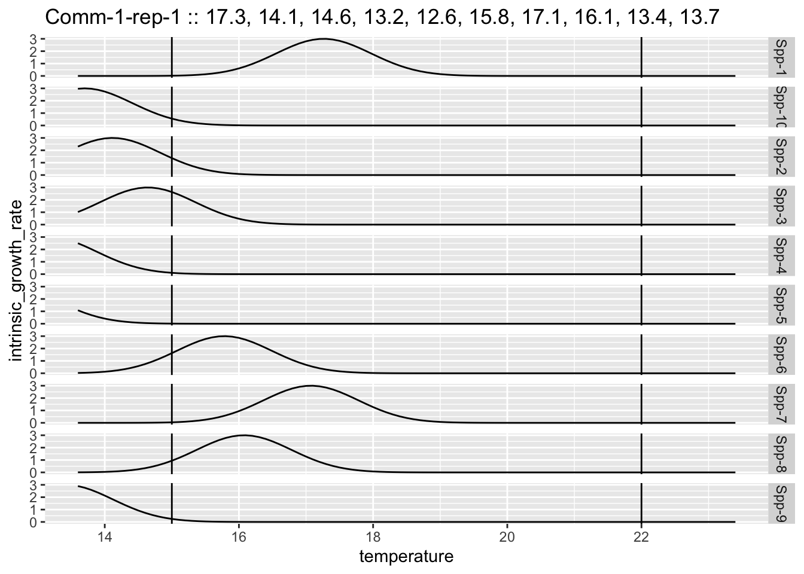
For examples, here is a community with more interspecific variation in optimum temperature. Vertical lines show the control and perturbation temperature specified in the experimental design:
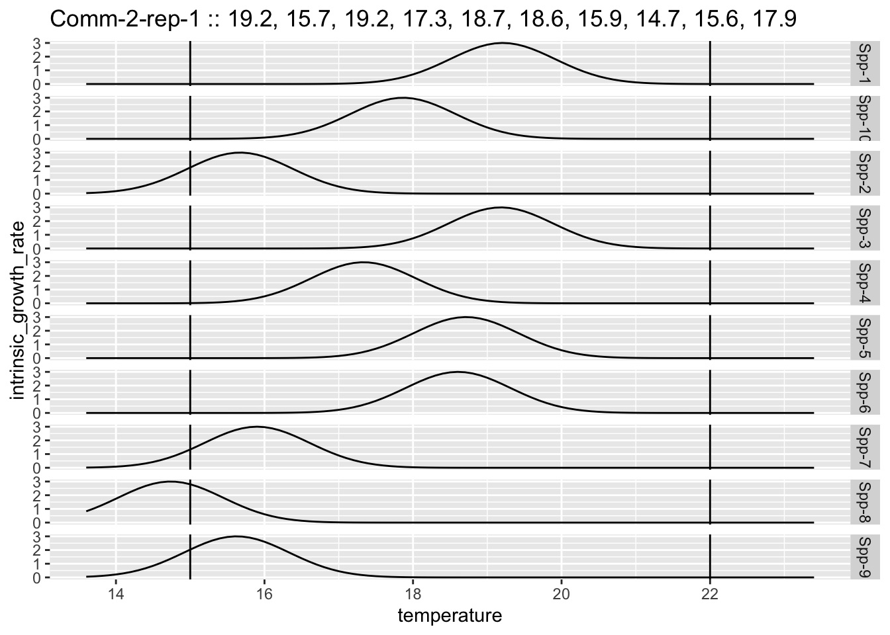
Strength of species interactions treatment
… to be done …
Analyses
Species response traits
We calculated two types of species response trait. First was a response trait based on the temperature response curve of a species. For this trait, we calculated the effect of the perturbation on intrinsic growth rate (perturbation temperature intrinsic growth rate - control temperature intrinsic growth rate).
Second was a response trait based on the observed response of the species to the pulse pertubation in the community context. Hence this response trait depends on the direct effect of the pulse on a species, and also the indirect effects via other species in the community.
Community response diversity
For the moment we don’t calculate the response diversity, but rather then mean of the response trait values and the variance of the response trait values of the species in a community. Maybe we see enough with that, maybe we benefit from using a measure of response diversity.
Community stability
This was calculated as the effect of the pulse perturbation on the total community biomass. Specifically the area between the control and perturbed dynamics.
Results
Example of a single community
Here in the top row is a panel for each species, with the control and the pulse perturbed dynamics. Bottom row is the difference between the perturbed and control treatment.
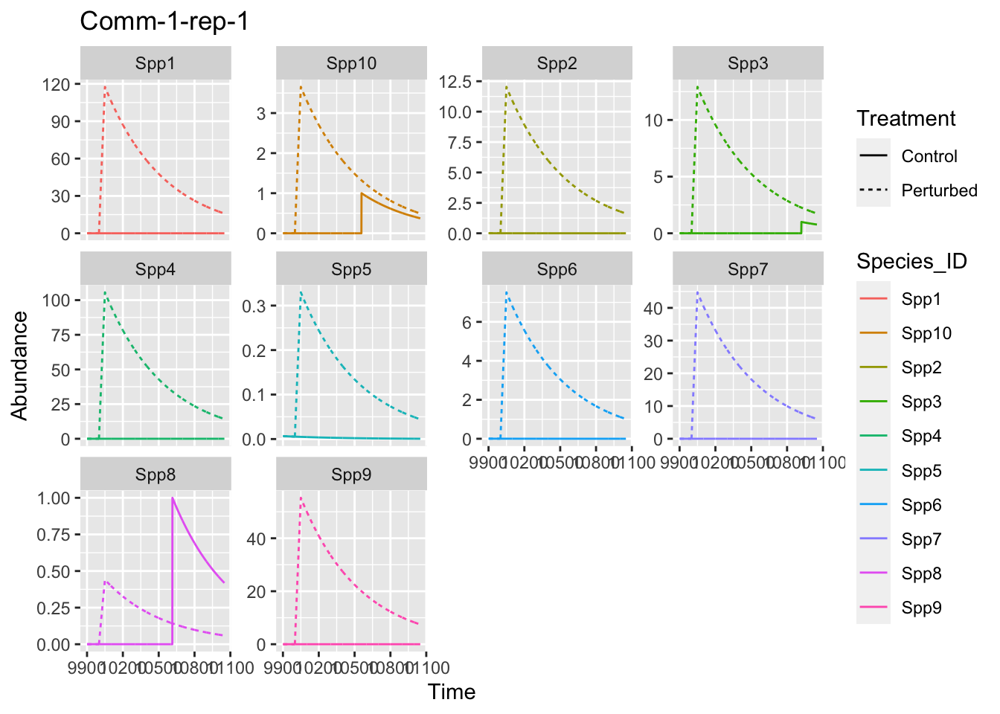
Here are the corresponding species response traits in this case:
| species_id | species_tot_deltabm | igr_pert_effect |
|---|---|---|
| Spp1 | 1049.4821 | 2.4689613 |
| Spp2 | 1049.0118 | 0.2526995 |
| Spp3 | 969.4382 | 0.2712853 |
| Spp4 | 1049.4500 | 2.2176869 |
| Spp5 | 1015.1343 | 0.0068212 |
| Spp6 | 1048.5269 | 0.1577507 |
| Spp7 | 1049.4328 | 0.9394782 |
| Spp8 | 285.8253 | 0.0092470 |
| Spp9 | 1049.3790 | 1.1604056 |
| Spp10 | 625.1093 | 0.0767182 |
And the total biomass dynamics:
comm_time_stab <- dynamics |>
## remove rows where biomass is 0 in both control and treatment
#filter((Con.M + Dist.M) != 0) |>
group_by(case_id, community_id, replicate_id, Time, Treatment) %>%
summarise(tot_ab = sum(Abundance, na.rm = T)) %>%
pivot_wider(names_from = Treatment, values_from = tot_ab) %>%
mutate(comm_LRR = log(Perturbed / Control),
comm_deltabm = (Perturbed - Control) /
(Perturbed + Control))p1 <- comm_time_stab |>
filter(case_id == case_of_interest) |>
ggplot(aes(x = Time)) +
geom_line(aes(y = Control), col = "black", linewidth = 3) +
geom_line(aes(y = Perturbed), col = "red", linewidth = 1) +
ylab("Total abundance")
p2 <- comm_time_stab |>
filter(case_id == case_of_interest) |>
ggplot(aes(x = Time)) +
geom_line(aes(y = comm_LRR))
p3 <- comm_time_stab |>
filter(case_id == case_of_interest) |>
ggplot(aes(x = Time)) +
geom_line(aes(y = comm_deltabm))
p1 / p2 / p3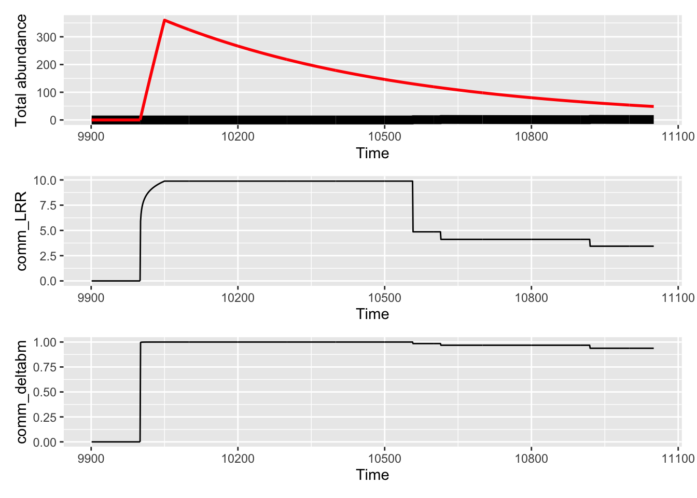
Example of a single community
Here in the top row is a panel for each species, with the control and the pulse perturbed dynamics. Bottom row is the difference between the perturbed and control treatment.
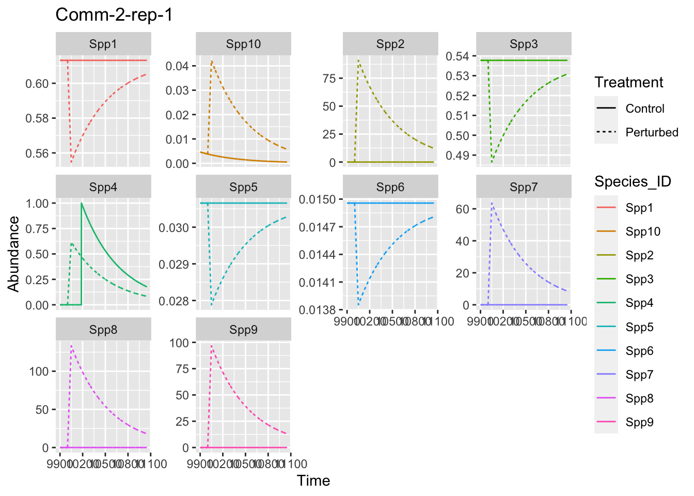
Here are the corresponding species response traits in this case:
| species_id | species_tot_deltabm | igr_pert_effect |
|---|---|---|
| Spp1 | -22.40071 | -0.0012263 |
| Spp2 | 1049.47595 | 1.9096257 |
| Spp3 | -22.40026 | -0.0010754 |
| Spp4 | -128.16900 | 0.0129500 |
| Spp5 | -21.25111 | -0.0000582 |
| Spp6 | -17.24848 | -0.0000232 |
| Spp7 | 1049.37531 | 1.3349003 |
| Spp8 | 1049.44399 | 2.7987784 |
| Spp9 | 1049.41485 | 2.0306548 |
| Spp10 | 877.66823 | 0.0008149 |
p1 <- comm_time_stab |>
filter(case_id == case_of_interest) |>
ggplot(aes(x = Time)) +
geom_line(aes(y = Control), col = "black", linewidth = 3) +
geom_line(aes(y = Perturbed), col = "red", linewidth = 1) +
ylab("Total abundance")
p2 <- comm_time_stab |>
filter(case_id == case_of_interest) |>
ggplot(aes(x = Time)) +
geom_line(aes(y = comm_LRR))
p3 <- comm_time_stab |>
filter(case_id == case_of_interest) |>
ggplot(aes(x = Time)) +
geom_line(aes(y = comm_deltabm))
p1 / p2 / p3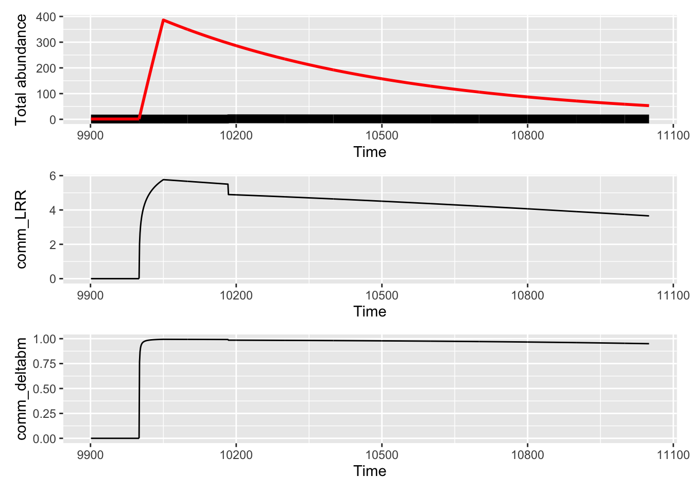
Response diversity and community stability
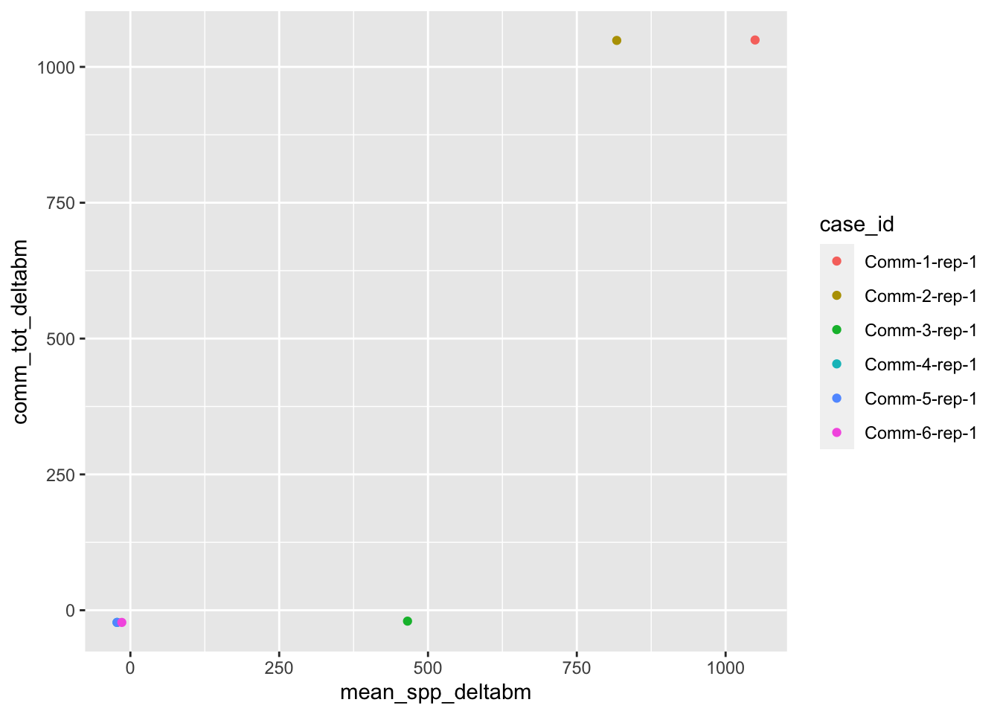
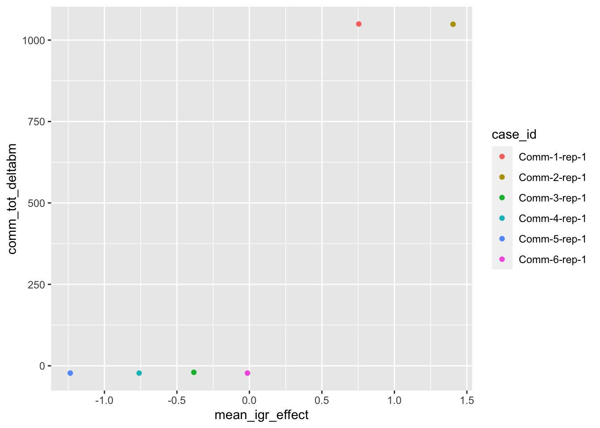
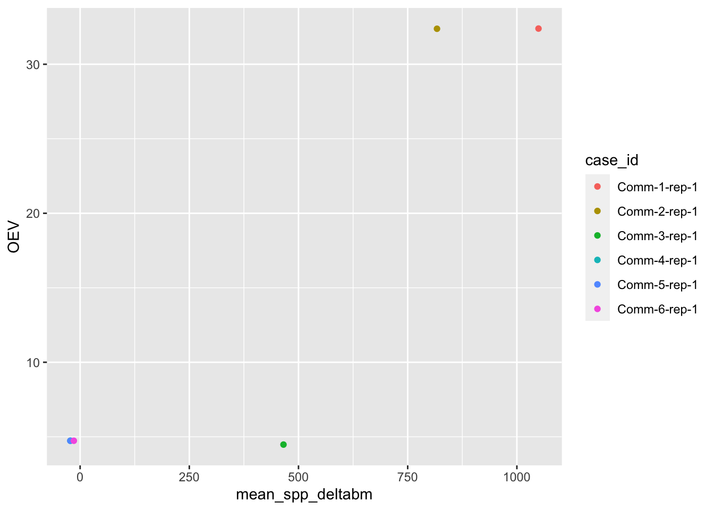
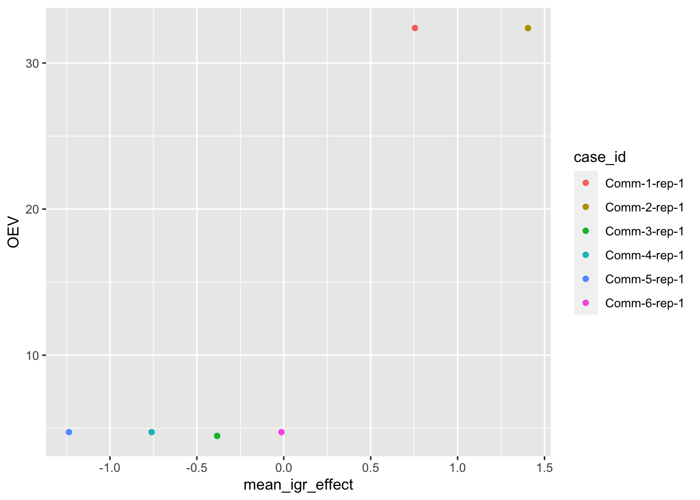